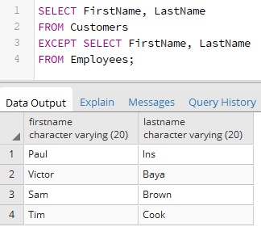
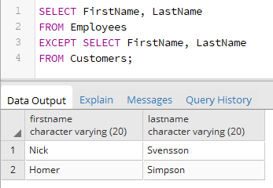

Вернуться на главную страницу →
Вернуться на главную страницу →
Разность множеств. EXCEPT
Оператор EXCEPT в PostgreSQL позволяет найти разность двух выборок, то есть те строки которые есть в первой выборке, но которых нет во второй. Для его использования применяется следующий формальный синтаксис:
Для примера возьмем таблицы из прошлой темы:
Таблица Employees содержит данные обо всех сотрудниках банка, а таблица Customers - обо всех клиентах. Но сотрудники банка могут также быть его клиентами. И допустим, нам надо найти всех клиентов банка, которые не являются его сотрудниками:
Подобным образом можно получить всех сотрудников банка, которые не являются его клиентами:
